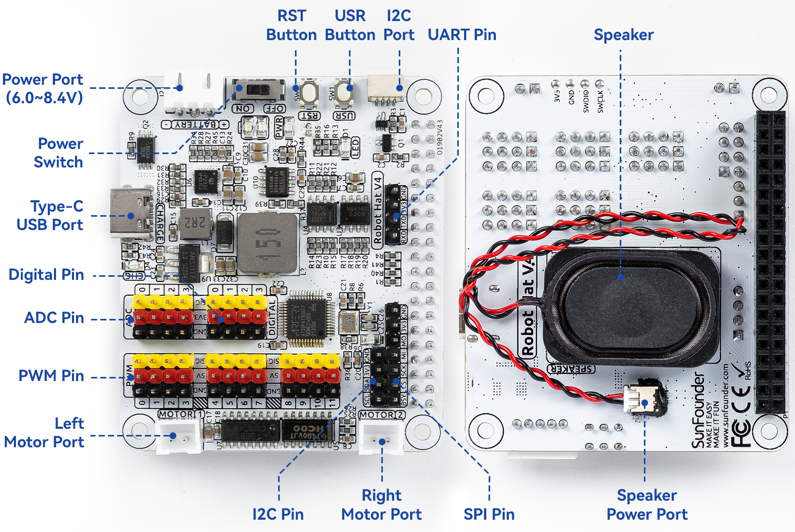

xWalk C++ Documentation Index¶
This index links the current C++ architecture and module documentation. Module-specific contracts, build options, backend ownership, safety constraints, and verification commands remain in each module README.
Workspace architecture¶
- xWalk common library: shared interface target for public
headers in
xWalk-rpi5-hw/xWalkLibrary/common. - xWalkHal: aggregate hardware-abstraction architecture and build options.
- xWalkAgent: application coordinators and aggregate Agent verification.
- xWalkController: standalone CLI aggregate and Controller composition.
- High-level architecture: workspace layers and ownership rules.
- Hardware architecture: devices and backends.
- CLI architecture: command coverage and implementation plan.
- Raspberry Pi deployment guide: install layout, idempotent setup, board-profile checks, and narrowly scoped device permissions.
- CMake dependency guide: external libraries, imported targets, build-mode requirements, package names, and discovery troubleshooting.
- xWalk-rpi5-tool overview: tool inventory, safety classes, and detailed links.
- Gerrit account setup guide: account provisioning, dedicated SSH keys, repository setup, review upload, voting, and remote-network access.
- Add a user to a Gerrit repository: individual account creation, group-based project access, SSH onboarding, verification, and revocation.
- Create Gerrit and configure xWalk CI: new server installation, project permissions, CI service identity, worker configuration, and first-run verification.
- Device Tree overlay guide: asset roles and inspection.
- Release acceptance checklist: independent host, ARM package, plug-and-run, and physical-safety evidence gates.
- Raspberry Pi 5 and PiCar-X readiness audit: hardware matrix, demonstrated support boundaries, deployment requirements, blockers, and safe first tests.
- Host production readiness work: host sanitizer, stress, coverage, clean-environment, and staged-install verification.
- Language-model provider configuration: Ollama, ChatGPT, Gemini, Claude, credential handling, and model selection.
- Licence-key workflow: authenticated encryption, protected input, environment loading, deployment, and secret-handling boundaries.
- Audio resources: combined sound-effect and background-music assets, provenance, layout, and integrity hashes.
Scripts¶
- Clean build script guide: safe discovery, preview, confirmation, and removal of generated CMake and Python output.
- Dependency installer script flags: complete option, default, compatibility alias, combination, and exit-status reference.
- Hardware provisioning script guide: Robot HAT profile and Linux device validation with configuration persistence.
- Host coverage script guide: foreground configure, build, test, coverage reporting, and enforced thresholds.
- Raspberry Pi setup script guide: safe dry-run, target validation, privileged apply behavior, and troubleshooting.
- xWalk licence tool guide: protected input, authenticated encryption, serial generation, decryption, output, and exit behavior.
- xWalk environment loader guide: sourced-shell loading, template validation, temporary-file cleanup, and environment security.
Robot HAT board diagram¶

The diagram identifies the Robot HAT power, motor, PWM, ADC, digital, I2C, SPI, UART, button, and speaker connections. See Hardware introduction for the corresponding hardware notes.
Agent modules¶
- xWalkHandler: controller contract, parsing, and command handlers.
- xWalkApp: executable targets, process entry points, generated help, application tests, and Raspberry Pi composition.
- Controller command flow: Mermaid traces from every CLI command through boot selection, typed handlers, Agent and HAL services, and final endpoints.
- PiCar-X Controller command reference: copyable commands for preflight, driving, sensing, media, voice, calibration, and SPI diagnostics.
- Jarvis and Gemini configuration: local Ollama, optional Gemini credentials, Piper voice setup, configuration, validation, and safe startup.
- xWalk licence installation: encrypted model configuration, credential loading, Controller validation, safe startup, and troubleshooting.
- xWalkBoot: host stub and RPi process hardware ownership.
- xWalkLineTracking: bounded line following.
- xWalkPicarx: movement, calibration, and sensing.
- xWalkSelfDrive: gestures, sounds, and action queue.
- xWalkSpiTransfer: bounded SPI transactions.
- xWalkVoiceActiveCar: sensor-aware voice car.
- xWalkGptCar: upstream JSON GPT-car assistant.
HAL modules¶
The HAL source tree groups low-level platform interfaces and common services
under interface, hardware device abstractions under device, sensor and
actuator components under sensor, and higher-level robot services and
features under layer1.
- xWalkAdc: Robot HAT analog-to-digital conversion.
- xWalkAdxl345: ADXL345 acceleration sensing.
- xWalkAudio: shared ALSA PCM, mixer, and device ownership.
- xWalkBoardControl: board reset, discovery, and firmware data.
- xWalkBuzzer: active and passive buzzer control.
- xWalkConfig: configuration parsing and persistence.
- xWalkGpio: GPIO abstraction and Linux backend.
- xWalkGPT: speech coordination plus Vosk and Espeak providers.
- xWalkI2c: I2C abstraction and Linux backend.
- xWalk-rpi5-iw: I2C and Controller Protobuf DTOs and typed gRPC services.
- xWalkLanguageModel: provider-neutral language-model access.
- xWalkLed: GPIO and PWM LED control.
- xWalkLineTracker: grayscale line-position estimation.
- xWalkMotor: single and paired motor control.
- xWalkMusic: musical tones and injected audio playback.
- xWalkPwm: Robot HAT PWM output.
- xWalkRobot: coordinated multi-servo robot control.
- xWalkServo: calibrated servo positioning.
- xWalkSpeaker: decoded audio-file playback.
- xWalkSpi: bounded SPI abstraction and Linux backend.
xWalk-rpi5-trace/README.md: filtered callback-based diagnostics.- xWalkUltrasonic: ultrasonic distance measurement.
- xWalkUserButton: button events and press timing.
- xWalkUtils: platform utilities and bounded lazy caching.
- xWalkVoiceAssistant: speech and model backend composition.
Safety and verification¶
Use host tests for ordinary verification. Raspberry Pi hardware tests are opt-in and must only run when the
correct Raspberry Pi and Robot HAT are connected, the robot is secured, and physical execution is approved.
Use ctest -N -L hardware to list hardware tests without executing them.